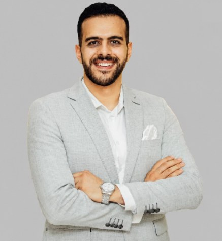

Junior Software QA Tester
Hady Mohamed Nagy
I help software teams catch bugs before their users do, through clear test design and precise bug reports.

- Steps
- Send Hady your app, a feature, or an API to test.
- Expected
- Defects found early, written up so developers can reproduce them fast.
- Actual
- Test cases, Jira bug reports, and a clear summary of what works and what doesn't.
About me
I'm a Software QA tester based in Alexandria, Egypt. I'm completing the Software Tester Diploma with DEPI (Digital Egypt Pioneers Initiative), which covers the ISTQB 4.0 syllabus, test analysis and design, static testing, and test management for Agile and database projects.
Before moving into QA, I spent more than five years in customer-facing roles working across several CRM systems. That work taught me accuracy under pressure and how real users get stuck, and I bring both to every test.
Education and training
- Software Tester DiplomaDEPI, Digital Egypt Pioneers Initiative. Aug 2026 to present
- Bachelor of Commerce, Business AdministrationAlexandria University. 2016 to 2020
- English TEFL CertificateTeacher Record, China. 2024
- German B1 (Intermediate)Österreich Institut, Austria. 2025
Services
Manual testing
Test analysis and design, test cases, and execution for web and software features.
API testing
Requests, responses, and status checks for your endpoints using Postman.
Bug reporting
Reproducible defect reports with clear steps, tracked and managed in Jira.
Test automation basics
Simple browser test scripts with Selenium, supported by Java fundamentals.
Skills
Testing
Tools
Working strengths
- Attention to detailA track record of accuracy under pressure.
- User empathy5+ years supporting customers across multiple CRM systems.
- Clear communicationConfident in English and intermediate German (B1).
Projects
Java Fundamentals
A capstone assignment from the DEPI training track. It covers core Java basics that support writing automated tests.
Leadership and volunteering
- High Board Director, Rotaract Alexandria CosmopolitanApr 2021 to present
- Sports Committee Board Member, Banque du Caire, Cairo2021 to 2022
- Volunteer, CFA Society EgyptSep 2020 to Sep 2023
- University Team Lead, CFA Research Challenge, Alexandria UniversitySep 2019 to Feb 2020
Let's test your product
I'm looking for a Junior Software Tester role and freelance QA projects. Send me a message or hire me directly on Upwork.